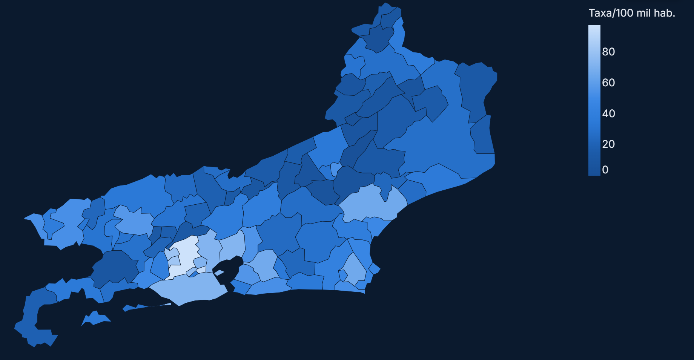

Dos microdados do SUS ao trabalho científico, sem precisar programar
Baixe, trate e analise dados oficiais do DATASUS numa interface simples no navegador. Os indicadores são conferidos com o TabNet, a estatística sai pronta e o programa ainda monta o rascunho do resumo para congresso.
Clique em um sistema para saber o que ele registra e o que dá para estudar:
SIMSistema de Informações sobre Mortalidade
O que é
Reúne as declarações de óbito de todo o país, por município de residência. No programa, de 1996 em diante, com a causa básica codificada pela CID-10. Também traz os óbitos fetais.
Principais variáveis
O que dá para estudar
- Mortalidade por infarto, AVC, câncer e diabetes
- Suicídio, homicídio e acidentes de trânsito
- Mortalidade infantil e materna (junto com o SINASC)
- Mortalidade prematura por DCNT (meta ODS 3.4)
- Tendências e o impacto da COVID-19
- Desigualdades por raça/cor, escolaridade e região
Atenção: causas mal definidas (R00–R99) e o sub-registro variam entre regiões; confira o percentual antes de comparar locais.
SINASCSistema de Informações sobre Nascidos Vivos
O que é
Reúne as declarações de nascido vivo, por município de residência da mãe, de 1996 em diante. Descreve a gestação, o parto e o recém-nascido.
Principais variáveis
O que dá para estudar
- Prematuridade e baixo peso ao nascer
- Cesáreas pela classificação de Robson
- Adequação do pré-natal (índice de Kotelchuck)
- Gravidez na adolescência
- Anomalias congênitas
- Denominador da mortalidade infantil e materna
Atenção: registra só nascidos vivos; perdas fetais estão no SIM.
SINANSistema de Informação de Agravos de Notificação
O que é
Reúne as notificações das doenças e agravos de notificação compulsória, cada um num arquivo próprio. Acompanha o caso da suspeita até o encerramento.
Agravos disponíveis (exemplos)
O que dá para estudar
- Incidência e sazonalidade das arboviroses
- Sífilis em gestante e sífilis congênita
- Cura e abandono do tratamento da tuberculose e da hanseníase
- Letalidade dos agravos
- Perfil das vítimas de violência
- Acidentes de trabalho e intoxicações
Atenção: depende da notificação; casos não notificados ficam de fora. Conte pelo ano de diagnóstico, como o TabNet.
SIHSistema de Informações Hospitalares do SUS
O que é
Reúne as internações pagas pelo SUS (autorizações de internação hospitalar, AIH), mês a mês, de 2008 em diante.
Principais variáveis
O que dá para estudar
- Taxas de internação por causa
- Internações por condições sensíveis à atenção primária
- Letalidade hospitalar
- Custos e tempo de permanência
- Procedimentos, como cirurgias e transplantes
- Deslocamento de pacientes entre municípios
Atenção: cobre só o SUS (rede pública e conveniada); internações particulares e por plano de saúde ficam de fora. Cada registro é uma internação, não uma pessoa.
SIASistema de Informações Ambulatoriais do SUS
O que é
Reúne a produção ambulatorial do SUS (consultas, exames e tratamentos), mês a mês, de 2008 em diante. As APAC detalham tratamentos de alto custo.
Principais arquivos
O que dá para estudar
- Oferta e uso de exames, como mamografia e citopatológico
- Tratamento do câncer (quimio e radioterapia)
- Terapia renal substitutiva
- Produção de serviços por município
Atenção: a produção ambulatorial conta procedimentos, não pessoas; para seguir pacientes, use as APAC.
CNESCadastro Nacional de Estabelecimentos de Saúde
O que é
Cadastro mensal dos estabelecimentos de saúde do país, públicos e privados, de 2005 em diante, com seus leitos, profissionais e equipamentos.
Principais arquivos
O que dá para estudar
- Leitos (incluindo UTI) por habitante
- Profissionais por especialidade e região
- Distribuição de equipamentos, como tomógrafos
- Vazios assistenciais e acesso aos serviços
Atenção: mostra a estrutura cadastrada, não o uso; para saber quanto foi usado, combine com o SIH ou o SIA.

Tudo o que você precisa para pesquisar com dados do SUS
O que levaria dias, entre baixar arquivos, decodificar variáveis e montar tabelas, passa a levar minutos.
Bases prontas
Microdados decodificados, com dicionário de variáveis, metadados e citação da fonte. Exporta para Excel, CSV, Stata e Parquet.
Indicadores oficiais
Mortalidade infantil e materna, incidência, internação e DCNT, com IC95%, taxas padronizadas e denominador automático.
Mapas e gráficos
Séries anuais, pirâmide etária, mapas por município e UF, e principais causas pela CID-10.
Estatística pronta
Tabela 1, Prais-Winsten, série temporal interrompida e regressão logística, com o texto de métodos já escrito.
Resumo para congresso
Achados ranqueados por relevância e um resumo estruturado (IMRD, 250–300 palavras) para você revisar.
Roda no seu computador
Funciona em PCs comuns de 8 GB, sem servidor e sem assinatura. Seus dados ficam com você.
Do arquivo bruto ao mapa em poucos cliques
Escolha a base, o período e os filtros. O programa calcula as taxas com a população oficial e desenha o mapa por município.
- Taxas por 100 mil habitantes com IC95%
- Ranking dos municípios
- Filtros por sexo, idade, raça/cor e região de saúde

Conferido com o TabNet
Os resultados foram comparados com o TabNet, a ferramenta oficial do Ministério da Saúde.
| Indicador | Sistema | Resultado |
|---|---|---|
| Nascidos vivos | SINASC | ● Idêntico |
| Óbitos infantis por faixa etária | SIM | ● Idêntico |
| Óbitos maternos | SIM | ● Idêntico |
| Óbitos por infarto agudo do miocárdio | SIM | ● Idêntico |
| Sífilis em gestante (RJ, 2009–2025) | SINAN | ● Idêntico |
| Internações hospitalares | SIH | ● ~0,4% abaixo |
Nas internações, a pequena diferença vem de residentes internados em outras UFs.
Pronto em quatro passos
Para Windows. Você faz isso uma vez só por computador e não precisa digitar nenhum comando.
Instale o Python
Baixe em python.org. Na primeira tela do instalador, marque “Add python.exe to PATH” e clique em Install Now.
Baixe o programa
Clique em Baixar grátis. Clique com o botão direito no arquivo baixado e escolha Extrair tudo.
Instale com dois cliques
Abra a pasta extraída e dê dois cliques em instalar.bat. Espere aparecer “Pronto!” (de 3 a 10 minutos).
Abra o programa
Sempre que quiser usar, dê dois cliques em interface.bat. O programa abre no navegador.
Se o Windows mostrar “O Windows protegeu o computador”, clique em Mais informações e depois em Executar assim mesmo. O aviso aparece com qualquer arquivo baixado da internet.
Sua primeira análise
Com o programa aberto no navegador, siga estes passos. O menu à esquerda tem três páginas: Buscar dados, Análise e Indicadores.
Escolha os dados
Em Buscar dados, aba Nova busca, escolha o Sistema de informação (ex.: SIM), as UFs e o Período (anos).
Filtre e baixe
Se quiser só uma doença, abra Filtros e opções avançadas e escolha a CID-10. Clique em Buscar e organizar dados e espere terminar.
Analise
Vá em Análise, escolha a base em Base de dados e use os filtros da barra lateral (sexo, idade, município...). As abas mostram séries, mapa, Tabela 1 e tendência.
Leve os resultados
Na aba Relatório, clique em Baixar relatório (Excel). Ali também ficam o texto de métodos e o rascunho do resumo para congresso.
Dica: para taxas como mortalidade infantil, use a página Indicadores; se faltar o denominador (ex.: nascidos vivos), ela mostra um botão para baixá-lo.
Precisa de ajuda com a sua pesquisa?
Além do programa gratuito, ofereço apoio para quem quer resultados prontos e um curso em vídeo para quem quer aprender a usar os dados do SUS.
Análises sob encomenda
Você diz o tema, o local e o período; eu entrego a análise pronta.
- Base tratada e documentada
- Tabelas, gráficos e mapas
- Métodos estatísticos redigidos
- Rascunho do resumo para congresso
Curso: Do DATASUS ao Congresso DISPONÍVEL
Pesquisa com dados do SUS sem programar: 42 aulas em vídeo, em 13 módulos, do primeiro download ao resumo pronto.
- Instalação e primeira busca, passo a passo
- SIM, SINASC, SIH, SINAN, SIA e CNES na prática
- Taxas, IC95%, Tabela 1, tendência e regressão
- Figuras para publicação e resumo para congresso
R$ 19,90 · acesso vitalício · garantia de 7 dias
Quero o cursoVamos conversar
Conte o que você precisa e eu respondo com uma proposta.
arthursildelphino@gmail.com